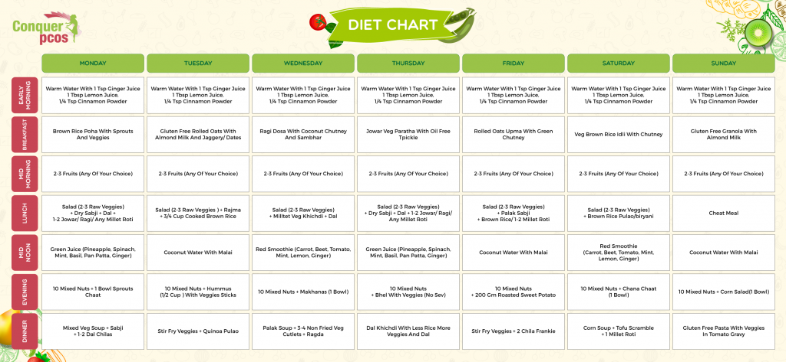

Nutrition is a critical part of health and development. Better nutrition is related to improved infant, child and maternal health, stronger immune systems, safer pregnancy and childbirth, lower risk of non-communicable diseases (such as diabetes and cardiovascular disease), and longevity.The type of organism determines what nutrients it needs and how it obtains them. Organisms obtain nutrients by consuming organic matter, consuming inorganic matter, absorbing light, or some combination of these. Some can produce nutrients internally by consuming basic elements, while some must consume other organisms to obtain pre-existing nutrients. All forms of life require carbon, energy, and water as well as various other molecules. Animals require complex nutrients such as carbohydrates, lipids, and proteins, obtaining them by consuming other organisms. Humans have developed agriculture and cooking to replace foraging and advance human nutrition. Plants acquire nutrients through soil and the atmosphere. Fungi absorb nutrients around them by breaking them down and absorbing them through the mycelium.A nutrient cycle is a biogeochemical cycle involving the movement of inorganic matter through a combination of soil, organisms, air or water, where they are exchanged in organic matter.[9] Energy flow is a unidirectional and noncyclic pathway, whereas the movement of mineral nutrients is cyclic. Mineral cycles include the carbon cycle, sulfur cycle, nitrogen cycle, water cycle, phosphorus cycle, oxygen cycle, among others that continually recycle along with other mineral nutrients into productive ecological nutrition. Biogeochemical cycles that are performed by living organisms and natural processes are water, carbon, nitrogen, phosphorus, and sulfur cycles.

Sugars are simple carbs. The body quickly breaks down and absorbs sugars and processed starch. They can provide rapid energy, but they do not leave a person feeling full. They can also cause a spike in blood sugar levels. Frequent sugar spikes increase the risk of type 2 diabetes and its complications. Fiber is also a carbohydrate. The body breaks down some types of fiber and uses them for energ; others are metabolized by gut bacteria, while other types pass through the body. Fiber and unprocessed starch are complex carbs. It takes the body some time to break down and absorb complex carbs. After eating fiber, a person will feel full for longer. Fiber may also reduce the risk of diabetes, cardiovascular disease, and colorectal cancer. Complex carbs are a more healthful choice than sugars and refined carbs.
.jpeg)
The GM diet, also known as the General Motors diet is a diet plan that promises to help you lose around 7 kilos in a week. The duration of the diet is one week and on each day you are supposed to eat different foods. The diet involves eating detoxifying foods that have negative calories
